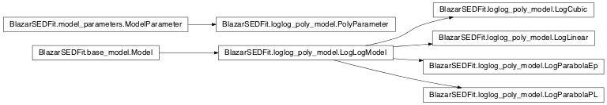

Module: loglog_poly_model¶
Overview¶
This module provides an interface handle the loglog polynomial model
Classes relations¶

Classes and Inheritance Structure¶
Module API¶
Summary¶
Module API
-
class
BlazarSEDFit.loglog_poly_model.LogCubic(nu_size=100, **keywords)[source]¶ Bases:
BlazarSEDFit.loglog_poly_model.LogLogModelClass to handle log-cubic model
-
class
BlazarSEDFit.loglog_poly_model.LogLinear(nu_size=100, **keywords)[source]¶ Bases:
BlazarSEDFit.loglog_poly_model.LogLogModelClass to handle log-linear model
-
class
BlazarSEDFit.loglog_poly_model.LogParabolaEp(nu_size=100, **keywords)[source]¶ Bases:
BlazarSEDFit.loglog_poly_model.LogLogModelClass to handle log-parabolic model
-
class
BlazarSEDFit.loglog_poly_model.LogParabolaPL(nu_size=100, **keywords)[source]¶ Bases:
BlazarSEDFit.loglog_poly_model.LogLogModelClass to handle a log-par + pl model
-
class
BlazarSEDFit.loglog_poly_model.PolyParameter(polymodel, **keywords)[source]¶ Bases:
BlazarSEDFit.model_parameters.ModelParameterThis class is a subclass of the
ModelParameterclass, extending the base class to loglog polynomial parameters.